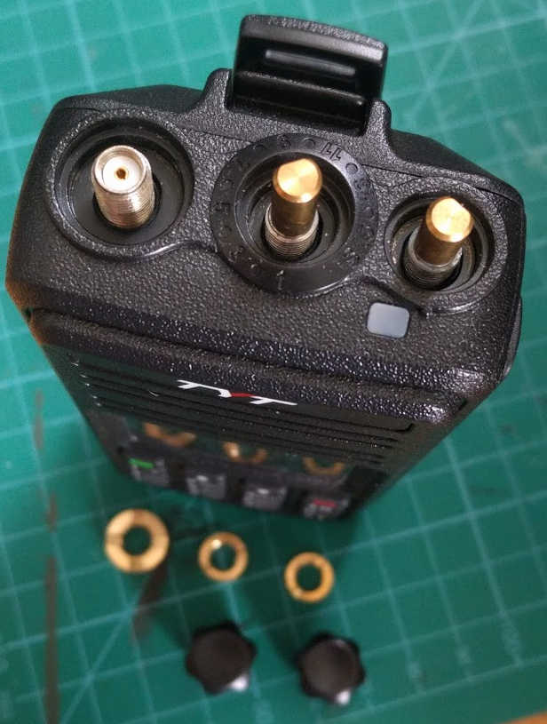
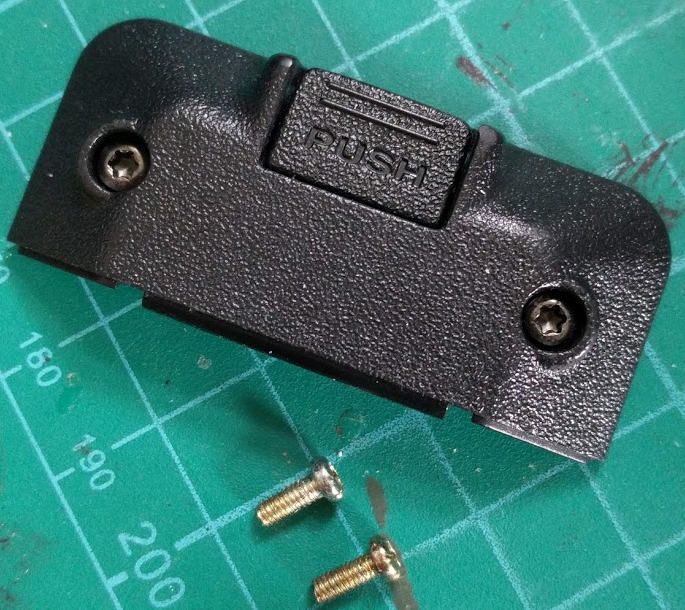
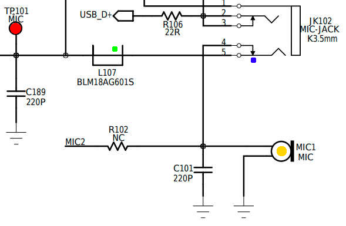
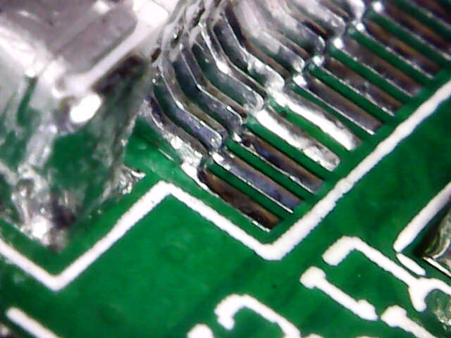

Often an intermittent fault can be worse than total failure.
My TYT MD-380 has an intermittent fault whereby it transmits weak or no audio.
It seemed to work on the bench but let me down twice while out mobile.
The second time, repeated impact with a rock briefly resolved the issue.
The video below demonstrates the nature of the problem:
Firstly, I key up and speak into the internal microphone on the radio. While the receiving radio squelch opens, no signal is emitted.
Next, an auxiliary audio source is connected in place of an external microphone and the receiving radio plays the music as expected.
From this, I presume either the microphone circuit or source switch is faulty.
Repair
The only tricky part of disassembling these TYT radios are the nuts securing the volume, channel and antenna elements passing through the plastic body.

Four Torx T8 screws are all that's left holding the radio together.
Once opened, care must be taken not to tear the ribbon cable, ZIF socket or speaker cable between the front and back PCBs.

I've got a schematic for an older version of the MD-380 courtesy of Miklor, which helps generally illustrate the concept of the microphone circuit.
In reality, there is a ribbon cable and additional ferrite beads in the signal path that are not shown here.
My first suspicion was that the default (NC) contact in the 3.5mm aux microphone socket (blue) wasn't closing correctly.
This would allow an aux microphone to function correctly but not the internal microphone (orange).
When simulating this fault by inserting a 3.5mm plug, the radio only transmits silence.
However, the original fault included a mixture of static, garbled and quiet voice, which while possible, is unlikely to be a symptom of a loose connection here.
Repeated insertion of the connector also didn't resolve the issue, so it's reasonably unlikely to be the jack contacts at fault.

Faults like this which are affected by vibration can certainly be caused by dry joints or damaged SMD components such as multi-layer ceramic capacitors but it is always worth checking all connectors and mechanical interconnects first as these are much more likely to be faulty.
I gave both PCBs a clean with isopropyl alcohol, a toothbrush and lint-free tissues before proceeding, as is very common, the through-hole components were soldered last in the manufacturing process and the flux was not removed.
I investigated a few possible points which could be faulty:
The microphone got a tap - no effect.
The ribbon cable got a wiggle - intermittent success!
ZIF socket on main PCB got a poke around the end with the mic contacts (pins 2&3) - nothing.
ZIF socket on front panel PCB got similar treatment. When the socket was pressed down at one end, the microphone behaved correctly.
After inspecting this socket more closely, it appears that the land pattern (copper pads on the PCB) don't line up with the component very precisely!
It may be that the PCB designer didn't account for the tolerance in the pick-and-place production process. It's also possible that the component was simply located incorrectly during setup.
I applied some MG Chemical No-clean flux and flowed some multicore lead-free solder on to the end few pins and the result of that can be seen below.

Ideally, I would have liked to move the whole connector, but unless I have a spare on standby, that isn't a risk I'm willing to take.
Conclusion
Bonus tip
Always take care not to allow cleaning fluids such as isopropyl alcohol near display assemblies. It turns out that I didn't learn after creating a wonderful ghosting pattern on my Nexus 5x by cleaning the screen with IPA.
While cleaning the MD-380 front panel board, I managed to get alcohol into the display which, luckily, did not cause permenant damage. I disassembled the display with needle-nose pliers, tweezers and a fresh scalpel blade and cleaned each layer individually.
Hopefully not a mistake I will be making a third time.
Final Note
When reassembling anything in life, always refer back to your parts pile every so often to see if you left anything out - before it's too late.
{kind=link}